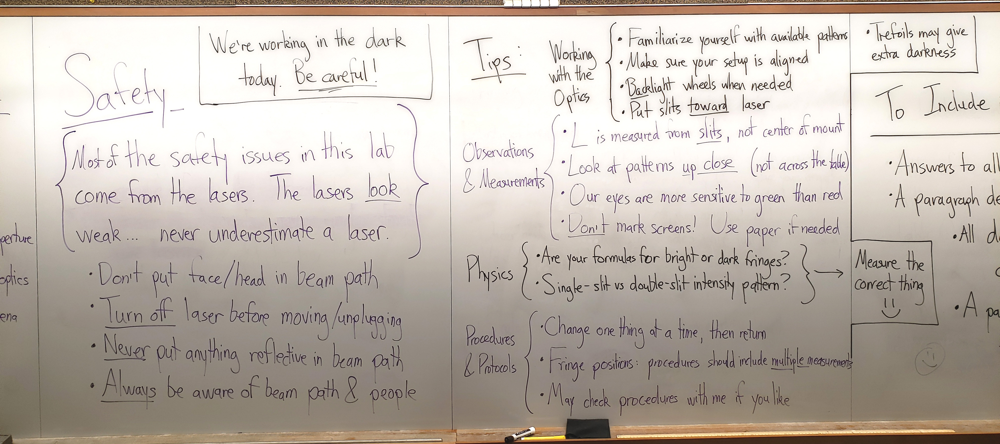
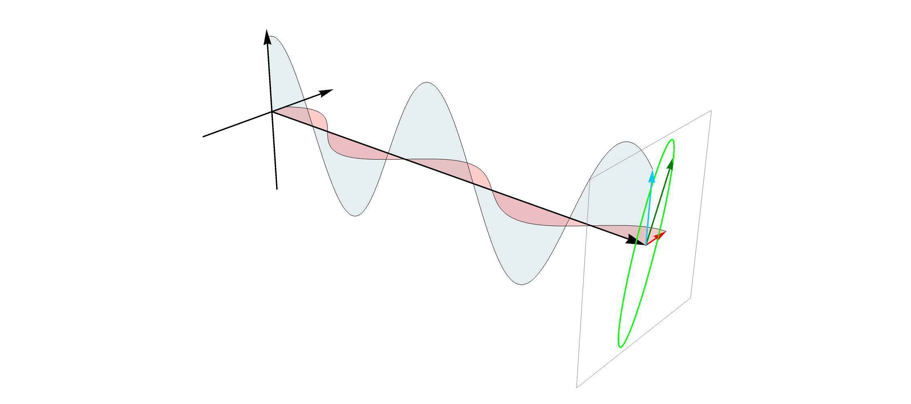
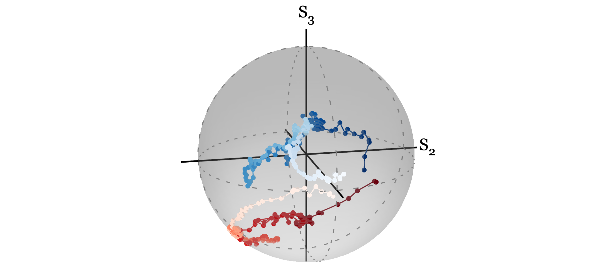
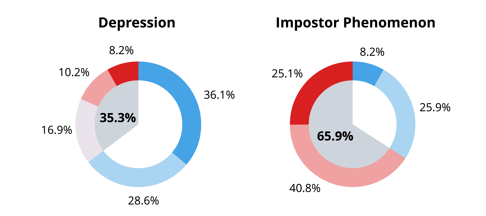

Teacher, Researcher, Liberal Arts Grad
As a liberal arts student, I learned to recognize the interconnectedness of everything and the value of asking big, fundamental questions. This shapes my teaching and my research.
In my teaching, I use active learning and aim to build collaborative, inclusive classrooms, where students get to ask and learn how physics shapes their everyday lives.
In my education research, I'm interested in how different facets of learning— metacognitive, epistemic, and affective—interact in both quantum classrooms and in graduate education generally. In my quantum networks research, I aim to study how fundamental physical mechanisms limit or benefit the deployment of real-world quantum networks.
I was a first-gen/low-income student, and that experience affects how I think about the environments where physics happens (both the classroom and the lab) by making me more attentive to the different backgrounds and experiences of my students and collaborators.
I'm also in it for funsies. The photo above, taken during my time as a research assistant in undergrad, is probably the coolest photo that has ever been taken or will ever be taken of me.

Teaching: Overview
I build my classrooms as learning communities that work collaboratively, view mistakes as learning opportunities, engage with modern learning tools, and reflect mindfully on the learning process. Read more about my teaching philosophy and experience.

Teaching: Simulations
I am building a number of simulations to help students at particular pain points I've encountered in physics curricula, including optics, integral forms of Maxwell's equations, and behaviors of quantum systems. Take a few minutes and play with them!

Research: Quantum Networks
Quantum networks are coming online across the world. To do so, they rely on commercially deployed telecom fiber, subject to real-world noise. I study and model such processes and consider fundamental limits on fiber-based quantum network architectures.

Research: Physics Education
I study two general questions within physics education:
(1) How do students learn quantum mechanics?
(2) In graduate school, with its many demands, stresses,
and challenges, how can we build an environment where budding researchers can find
happiness and success?